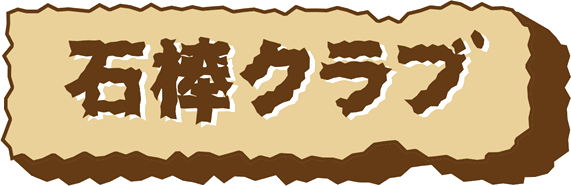

⚙
石棒スキャナー
3Dデータ提供：石棒クラブ／飛騨みやがわ考古民俗館
0
/ 211体
発掘済み
📷 スキャンする
📚 図鑑を見る
石棒クラブ Sketchfab の
全3Dデータをコンプリートしよう！
？ 遊び方

✕
バーコードをスキャン
商品・本などのバーコードを枠に合わせてね
✕
🏺
🔲 Sketchfabで3Dを見る
🎊 石棒スキャナーで発掘
← 払って発掘しよう！ →
📷 もう一度スキャン
📚 図鑑を見る
🎊 演出をもう一度見る
←
石棒図鑑
0/211
0
/ 211体
発掘済み
0 / 211 体
石棒クラブ Sketchfab の全3Dデータをコンプリートしよう！
✕
🏺 石棒スキャナーとは？
📷
スキャンする
どんなバーコードでもOK。スキャンすると208種類の遺物・民俗資料からひとつが発掘される。同じバーコードからはいつも同じものが出るよ。
📚
図鑑を見る
集めた遺物を記録。全211種コンプリートを目指せ！
🔲
3Dを見る
カードのボタンから本物の3Dモデルをぐるぐる見られる。
⭐
激レアをゲットしよう
500回に1回で石棒くん（No.209）またはメカ石棒くん（No.211）、飛騨みやがわ考古民俗館の館内QRコードで限定品（No.210）が出るよ。
3Dデータ提供：石棒クラブ（飛騨みやがわ考古民俗館）
ホーム画面に追加しよう
いつでもすぐ起動できるよ！
追加
✕
⚙ 設定
✕
テーマ
ライト
明るく温かみのある配色
ダーク
神秘的な暗い配色